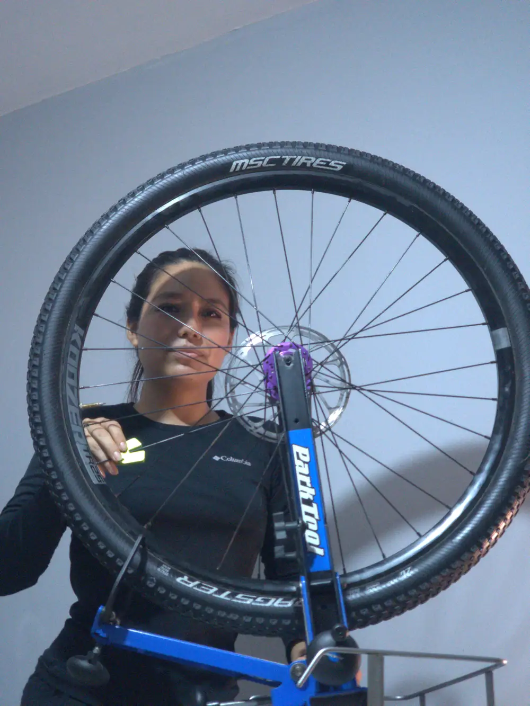
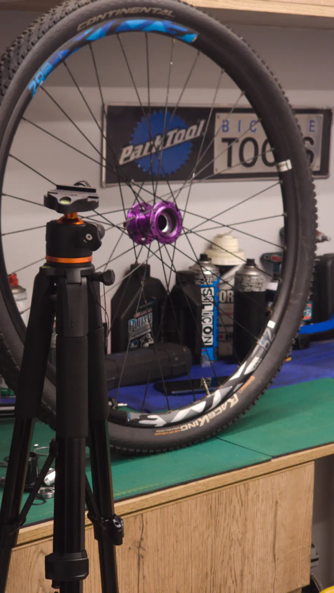
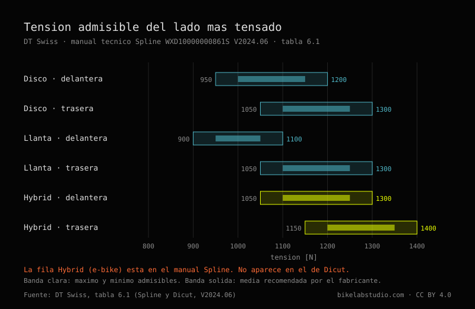
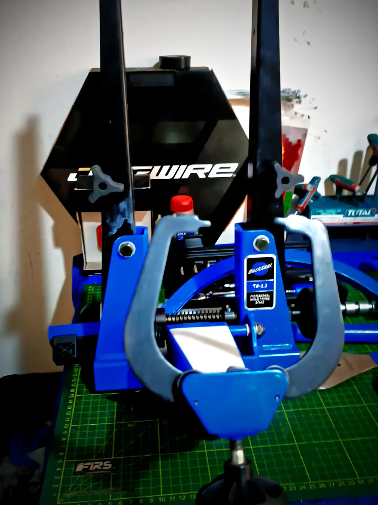
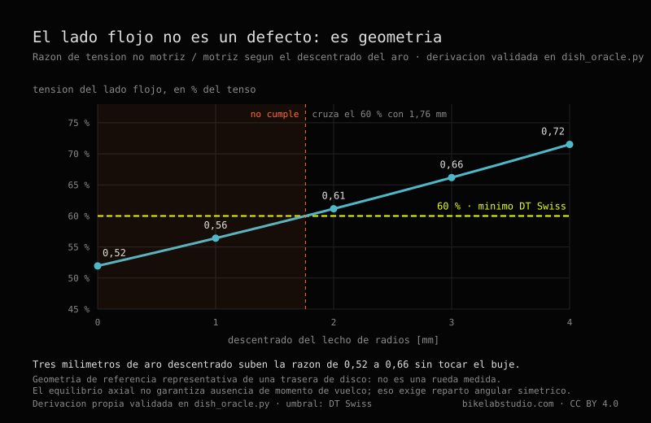
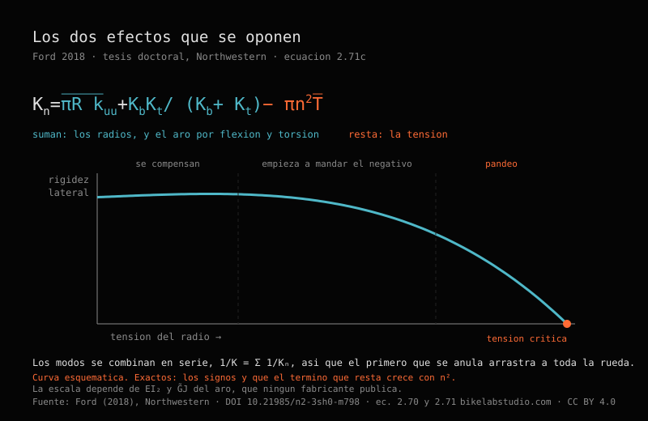

Keily Sánchez
Al otro lado de la rueda. Trujillo, enero de 2026. Disponible para trabajo editorial.
@sanchez.keily · @kei.san02 · Fotografía: Carlos Eduardo Ravello Joo
Un radio suena. Lo pulsas con la uña y da una nota, y si has centrado unas cuantas ruedas acabas afinando de oído sin proponértelo. Eso todo el mundo lo sabe. Lo que casi nadie sabe es cuánta tensión tendría que haber ahí.
Pregunta en diez talleres y te dan diez respuestas. Y ocho de los diez te dirán, con la calma del que repite algo que oyó bien, que medio milímetro de alabeo es lo que manda la norma ISO.
No lo manda. Fui a mirarlo, y esto es lo que hay.
Para una rueda de disco corriente, DT Swiss publica una ventana de 950 a 1200 N en la delantera y de 1050 a 1300 N en la trasera —unos 97 a 122 kgf y 107 a 133 kgf—, y esos valores son del lado más tensado, no de la rueda entera. El otro lado va por debajo por geometría, alrededor del 52 % en una trasera de disco, y apretarlo no lo arregla: descentra la rueda. El medio milímetro de alabeo que todo el mundo cita no sale de la norma ISO, sale de una guía de Park Tool donde está escrito como orientación general; DT Swiss especifica 0,3 mm para sus propias ruedas.
Antes de los números hay que entender qué sostiene qué, porque casi todo el mundo lo tiene al revés y no es culpa suya: la rueda engaña.
Un radio es un alambre. Tira, y nunca empuja: si lo comprimes se dobla y deja de hacer nada. Así que cuando ves treinta y dos radios sosteniendo a alguien de ochenta kilos, lo que estás viendo no es a los de arriba colgando la bicicleta. Es un aro que llegó de fábrica apretado por treinta y dos alambres que tiran todos hacia el buje a la vez. El aro vive comprimido: es un anillo al que le sobra diámetro y no puede estirarse.
Te subes y la rueda se aplana un poco donde toca el suelo. Los radios de esa zona pierden tensión. Los de arriba no ganan casi nada. El peso no baja por los radios de arriba: se transmite porque abajo se deja de tirar.
Si la tensión de reposo es suficiente, los radios de abajo se aflojan un poco en cada vuelta y vuelven, y el ciclo que ven es pequeño. Si es insuficiente llegan a cero, quedan sueltos un instante y vuelven a cargar de golpe. Un radio no se parte por tirar mucho: se parte por soltar y volver a tirar, vuelta tras vuelta, durante años.

DT Swiss lo publica, y lo publica bien: en newton, separado por tipo de freno y por uso, en la tabla 6.1 de sus manuales técnicos —el de la serie Spline, documento WXD10000000861S, versión 2024.06, y el de Dicut, WXD10000000860S, de la misma fecha—.
El encabezado tiene una precisión que se agradece y que casi nunca se cita: los valores son del lado más tensado de la rueda. No de la rueda entera.
| Rueda | Mínimo | Máximo | En kgf |
|---|---|---|---|
| Disco, delantera | 950 N | 1200 N | 97 – 122 |
| Disco, trasera | 1050 N | 1300 N | 107 – 133 |
| Freno de llanta, delantera | 900 N | 1100 N | 92 – 112 |
| Freno de llanta, trasera | 1050 N | 1300 N | 107 – 133 |
| E-bike, delantera | 1050 N | 1300 N | 107 – 133 |
| E-bike, trasera | 1150 N | 1400 N | 117 – 143 |
La columna en kilogramos-fuerza es una conversión nuestra, a 1 kgf = 9,80665 N, porque casi todos los tensiómetros de taller leen en kgf. Los valores oficiales son los newton.

Esa última fila es la única cifra de fabricante que hemos encontrado que ponga número a lo que el motor de una eléctrica le exige a la rueda: cien newton más de techo que la trasera de disco equivalente. Está en el manual de Spline y no en el de Dicut, que es la gama de ruta y no lleva ruedas de e-bike.
Y ahora, por qué no has visto nunca esa tabla. En el PDF esos números no dicen 1200: dicen 1 200, con un espacio fino tipográfico en medio. Busca «1200» dentro del documento y no encuentras ni una coincidencia. Para leer la tabla hubo que descargar el PDF y descomprimir sus flujos internos byte a byte, porque ni el buscador del visor los ve. Un dato gratuito, publicado y verificable, y estructuralmente invisible para cualquier máquina que vaya a buscarlo.
ISO 4210-7:2023 es la parte de la norma que trata de ruedas y llantas. Diez páginas, edición segunda, enero de 2023. La leímos entera.
No contiene ni un solo valor en milímetros. Ninguno. Tiene fuerzas en newton, duraciones en minutos y dos figuras con un comparador montado explicando cómo se mide la exactitud rotacional. Cómo se mide, no cuánto se admite.
Sí dice dónde vive la cifra: en su apartado 4.4 manda controlar el alabeo lateral conforme a ISO 4210-2:2023, apartado 4.10.1. Esa parte 2 cuesta dinero y no la hemos leído. Así que el número existe, tiene domicilio conocido, y casi nadie ha ido a esa dirección — nosotros tampoco. Preferimos decirlo así que fingir que la norma no dice nada.
«Medio milímetro de alabeo lateral es lo que exige la norma ISO.»
De Park Tool, guía de centrado del 31 de marzo de 2021, y dicho con toda honestidad: «As a general guideline, try for 0.5 millimeters or less of lateral deviation.» Una orientación general. En la misma página dan 1 mm para el alabeo radial —el doble de margen— por una razón de taller que ojalá se repitiera tanto como el número: la rueda va a llevar un neumático encima, y los neumáticos no se fabrican con esa precisión.
Mientras tanto, en la tabla 6.2 de esos mismos manuales, DT Swiss especifica para sus propias ruedas 0,3 mm de alabeo lateral en carbono y en aluminio soldado, y 0,4 en aluminio con casquillo. El mismo valor para freno de llanta que para disco, cosa que descoloca a quien da por hecho que el disco perdona más.
Park Tool 0,5. DT Swiss 0,3. Casi el doble entre dos autoridades que nadie discute. No se contradicen del todo: Park Tool escribe una guía para cualquier rueda que entre en un taller, DT Swiss una especificación de producto para las suyas. Pero quien cita el 0,5 como si fuera universal está trabajando por encima de lo que el fabricante de esa rueda admite, y quien lo cita como normativo está citando algo que no ha abierto.

Toda rueda trasera con casete tiene un lado flojo. La pletina del lado del casete está más cerca del centro para dejarle sitio a los piñones, así que sus radios salen con menos ángulo y, para que el aro quede centrado, tienen que tirar más fuerte. El otro lado queda por debajo. Siempre.
La pregunta de taller es cuánto por debajo, y esa cifra no la publica nadie: la buscamos en fabricantes de bujes, de aros y en literatura técnica. No está. Pero no hace falta que nadie la publique, porque sale de la estática: el aro solo puede quedar centrado si los tirones laterales de los dos lados se anulan. De ahí sale una relación que solo depende de tres cosas —cuántos radios hay por lado, cuánto separan las pletinas del plano de la rueda, y cuánto miden los radios—.
En una trasera de disco corriente el lado no motriz queda alrededor del 52 % del motriz. Si el lado tenso va a 1200 N, el flojo trabaja entre 600 y 900 N según el buje. Ese es el rango real de medio juego de radios de tu rueda, y es la mitad de lo que dice la tabla.
Tres consecuencias que sirven el lunes por la mañana.
La primera. Esa relación no depende de cómo montes la rueda, ni del calibre del radio, ni de cuánto aprietes. Así que «el lado izquierdo está flojo» no es un defecto que se arregle apretándolo: si lo aprietas, descentras. Park Tool ya lo decía en prosa —«the opposing side will simply have lower tension when the centering, or dish, is correct»—; lo que faltaba era el número.
La segunda. Circula mucho, sobre todo en inglés, que el lado motriz va «1,82 veces» más tenso. Ese número no es una constante de la naturaleza: es el resultado de un buje concreto. Cambia con la geometría de cada rueda. En nuestra configuración de referencia sale 1,93. Citarlo como si fuera universal es citar la medida de la rueda de otro.
La tercera, que es la que más nos gustó. Un aro offset —taladrado fuera del centro— mueve esa geometría sin tocar el buje. Tres milímetros de descentrado suben la relación de 0,52 a 0,66. Y aquí aparece algo que no habíamos visto escrito en ningún sitio: DT Swiss pide que el lado flojo no baje del 60 % del tenso, y con aro simétrico esa rueda de referencia se queda en 52 %. No llega. Cruza el 60 % con 1,8 mm de offset. El aro descentrado no es un refinamiento de marketing: es lo que hace alcanzable la propia regla del fabricante.

La derivación completa, con sus casos límite y su validación numérica, está publicada como código abierto en el repositorio de BikeLab. No es un resultado experimental: es geometría, y cualquiera puede rehacerla o romperla.
Henri Gavin instrumentó tres ruedas traseras con galgas extensiométricas, se fue a rodar con ellas, y después se llevó radios al laboratorio y los rompió a fatiga. Setenta y seis radios. Publicó el reparto:
El codo es esa curva de noventa grados que hace el radio para entrar en el buje, doblada en frío durante la fabricación, con el metal endurecido y con tensiones residuales de nacimiento. Gavin lo llama, tal cual, «this fatigue critical detail». Los otros ocho rompieron en la rosca, donde los valles del fileteado concentran tensión.
Nota de taller: si se te parte un radio, lo primero es mirar dónde se partió. Te está diciendo qué pasó.
Y aquí se cobra algo que dijimos al principio. «Un radio es un alambre», sin más, no es cierto en gama alta: un radio bueno es más fino por el centro que por los extremos. Un 2,0/1,8/2,0 tiene dos milímetros en las puntas y 1,8 en el tramo largo. Parece que lo debilita y hace lo contrario: la zona fina estira más para la misma carga, y al estirar más se come parte del ciclo que si no llegaría entero a los extremos. Se adelgaza el medio precisamente para descargar el codo y la rosca, que es donde rompen los setenta y seis.
Entre ciclistas circula que más tensión hace la rueda más rígida. Tiene sentido intuitivo: tensar suena a endurecer, y el radio tenso suena más agudo, igual que una cuerda. Entre montadores de ruedas circula lo contrario: que la tensión no afecta a la rigidez mientras ningún radio se afloje del todo bajo carga.
Matthew Ford midió, simuló y calculó, y escribió esto en la página cuatro de su tesis de Northwestern:
«Contrary to both popular belief and expert consensus, increasing spoke tension reduces the lateral stiffness of the wheel, which I demonstrate through theoretical calculations, finite-element simulations, and experiments.»
Subir la tensión reduce la rigidez lateral. En su apartado 2.6.2 enumera las dos creencias, la del ciclista y la del profesional, y las liquida juntas: «Both of these views are incorrect.»
El mecanismo, en cristiano: la tensión entra por dos puertas que empujan en direcciones contrarias. Por una, un radio tenso se resiste más a que lo muevas de lado, que es el efecto de cuerda de guitarra que todo el mundo intuye. Por la otra, esos treinta y dos radios tirando hacia el centro están comprimiendo el aro, y un aro comprimido es un anillo que quiere pandear. Piensa en una regla de plástico que empujas por las dos puntas: aguanta, aguanta, y de pronto salta hacia un lado. El aro está todo el rato en esa situación.

A tensión baja los dos efectos casi se cancelan, y por eso quien mide en ese rango no ve nada: la rueda parece indiferente. Más arriba empieza a mandar el término que resta, y la rigidez lateral baja. Y si sigues subiendo llegas a una tensión crítica donde la rueda pandea y no vuelve.
Ojo con la interpretación fácil. Esto no dice que haya que tensar poco. La tensión alta sigue siendo lo único que impide que un radio llegue a cero bajo carga, que es lo que de verdad los rompe. Lo que dice es que la tensión no es una palanca de rigidez: quien aprieta un poco más «para que quede más firme» está pagando algo y no está comprando nada.
Volvemos a la norma un momento, porque hay algo que sí distingue y que en el taller no se dice nunca.
ISO 4210 conoce cuatro tipos de bicicleta: ciudad y trekking, joven adulto, montaña y carretera. Buscamos «downhill» y «BMX» en el documento entero: cero ocurrencias. No existen ahí.
Para cada uno de esos cuatro fija una fuerza sobre el aro en el ensayo de resistencia estática. Tres de ellos, 250 N. La de montaña, 370. Un 48 % más.
Y hay tres detalles del método que valen más que el número. La fuerza va perpendicular al plano de la rueda: no es el peso del ciclista, que sería radial, es un empujón lateral. El ensayo mide deformación permanente —se anota la posición del aro, se carga un minuto, se descarga, se deja asentar otro minuto y se vuelve a medir—, así que lo que se comprueba no es cuánto se dobla sino si se queda doblada. Y en una rueda trasera la fuerza se aplica desde el lado del casete, es decir, empujando hacia el lado que lleva menos tensión. Quien escribió esa norma sabía perfectamente por dónde cede una rueda.
Fíjate dónde nos deja esto. Ford dice que lo que la tensión reduce es la rigidez lateral. Gavin dice que el patrón de radiado importa sobre todo bajo carga lateral, y que ahí es donde se gana o se pierde vida a fatiga. Y el único número de la norma que cambia según la disciplina es lateral. Tres fuentes, tres métodos, cuarenta años entre la primera y la última, apuntando al mismo eje. Mientras tanto la conversación de taller va casi toda sobre el peso, que es radial.
Nada de lo anterior sirve si no cambia lo que haces delante del centrador. Esto es lo que cambia:
Todo lo que sale aquí, clasificado. No por tema: por qué tipo de cosa es cada afirmación, que es lo que decide cuánto peso puede sostener.
| MEDIDO — HAY UN ENSAYO O UNA ESPECIFICACIÓN DETRÁS | |
| 950–1200 N en disco delantera, 1050–1300 en trasera, 1150–1400 en trasera de e-bike, lado más tensado | DT Swiss, tabla 6.1 |
| Alabeo lateral 0,3 mm en carbono y aluminio soldado; 0,4 con casquillo | DT Swiss, tabla 6.2 |
| 370 N sobre el aro en montaña, 250 en los otros tres tipos, desde el lado del casete | ISO 4210-7:2023 |
| 68 de 76 radios rompen en el codo; 8 en la rosca; ninguno por el medio | Gavin, 1996 |
| Subir la tensión reduce la rigidez lateral; existe una tensión de pandeo | Ford, 2018 |
| La carga estática por rueda es el 60 % del peso máximo de sistema | DT Swiss, manual ASTM |
| DERIVADO — NADIE LO MIDE, PERO SE SIGUE DE LA ESTÁTICA | |
| La relación entre lados es geometría pura: no depende de cómo montes ni de cuánto aprietes | Equilibrio del aro |
| El lado no motriz queda al 52 % del motriz en una trasera de disco corriente | Lo anterior |
| 3 mm de aro offset suben esa relación de 0,52 a 0,66, sin tocar el buje | Lo anterior |
| CRITERIO — ALGUIEN CON BUEN OJO LO FIJÓ, Y NO HAY ENSAYO PUBLICADO DETRÁS | |
| 0,5 mm de alabeo lateral y 1 mm de radial como orientación de taller | Park Tool, 2021 |
| ±20 % de dispersión respecto a la media como tensión relativa aceptable | Park Tool, 2021 |
| 100–120 kgf como rango genérico de aro, con el neumático sin presión | Park Tool, 2021 |
| SIN RESPALDO QUE HAYAMOS ENCONTRADO | |
| La tabla peso del ciclista → número de radios | Siete bases científicas |
| La precisión de un tensiómetro, en ±% | Park Tool y DT Swiss |
| Qué tensión y qué dispersión traen las ruedas nuevas de fábrica | Cero resultados |
Son criterios buenos, los de Park Tool. Los usamos. Pero un criterio no es una medición, y llamarlo por su nombre no le quita valor: le pone el suyo.
Y aparte, una que no encaja en ningún montón: el umbral normativo de alabeo existe, tiene dirección exacta —ISO 4210-2:2023, apartado 4.10.1— y no lo hemos leído. Ni nosotros ni, probablemente, la mayoría de los que lo citan.
Cada respuesta se sostiene sola y lleva su fuente dentro, para que se pueda citar sin arrastrar el resto del texto. Es la forma corta de todo lo anterior.
DT Swiss publica la ventana en la tabla 6.1 de sus manuales técnicos (Spline WXD10000000861S y Dicut WXD10000000860S, V2024.06), y los valores son del lado más tensado de la rueda, no de la rueda entera: 950 a 1200 N en rueda de disco delantera, 1050 a 1300 N en trasera de disco, 900 a 1100 N en freno de llanta delantera y 1150 a 1400 N en trasera de bicicleta eléctrica, que es el techo más alto que publica el fabricante. En kilogramos-fuerza, dividiendo por 9,80665: 97–122, 107–133, 92–112 y 117–143 kgf.
No. ISO 4210-7:2023, la parte de la norma dedicada a ruedas y llantas, no contiene ningún valor en milímetros: solo fuerzas, tiempos y métodos de medida. En su apartado 4.4 remite el control del alabeo a ISO 4210-2:2023, apartado 4.10.1, que es una norma de pago. El 0,5 mm que se repite en los talleres viene de la guía de centrado de Park Tool del 31 de marzo de 2021, donde está escrito como orientación general. DT Swiss, para sus propias ruedas, especifica 0,3 mm en carbono y aluminio soldado (tabla 6.2).
Va más flojo porque la pletina del lado del casete está más cerca del centro de la rueda para dejar sitio a los piñones: sus radios salen con menos ángulo y tienen que tirar más fuerte para que el aro quede centrado. La relación entre los dos lados es geometría —número de radios por lado, separación de las pletinas y longitud de los radios— y no depende de cómo se monte ni de cuánto se apriete, así que apretar el lado flojo no lo corrige: descentra la rueda. En una trasera de disco corriente el lado no motriz queda alrededor del 52 % del motriz; un aro descentrado (offset) de 3 mm sube esa relación a 0,66 sin tocar el buje. Derivación abierta de BikeLab Studio, 2026.
En el codo. Henri Gavin rompió a fatiga 76 radios en laboratorio y publicó el reparto en el Journal of Engineering Mechanics de la ASCE en 1996: 68 rompieron en el codo trabajado en frío, 8 en la rosca y ninguno por el tramo central. Por eso los radios de gama alta se adelgazan por el medio: la zona fina estira más y absorbe parte del ciclo que si no llegaría entero al codo y a la rosca.
No. Matthew Ford demostró lo contrario en su tesis doctoral de Northwestern University (2018, DOI 10.21985/n2-3sh0-m798) con cálculo, elementos finitos y ensayo: subir la tensión de los radios reduce la rigidez lateral de la rueda, porque los radios comprimen el aro y un aro comprimido tiende a pandear; existe una tensión crítica a la que la rigidez lateral se anula. La tensión alta sigue siendo necesaria por otro motivo: impedir que algún radio llegue a cero bajo carga, que es lo que los rompe por fatiga.
En la carga lateral, no. ISO 4210-7:2023 fija 370 N sobre el aro para la bicicleta de montaña y 250 N para los otros tres tipos que reconoce —ciudad y trekking, joven adulto y carretera—. La fuerza se aplica perpendicular al plano de la rueda y, en la rueda trasera, desde el lado del casete, que es el lado con menos tensión. El ensayo mide deformación permanente, no deflexión. El downhill y el BMX no aparecen en el documento.
No existe esa tabla. Se buscó en siete bases de datos científicas y en la documentación de los fabricantes y no hay ensayo publicado que relacione peso del ciclista con número de radios. La industria acota la rueda por otro eje: DT Swiss publica un peso máximo de sistema por modelo —ciclista más bicicleta más equipaje— y una regla de reparto, que la carga estática máxima por rueda es el 60 % de ese peso de sistema.
Ravello Joo, C. E. (2026). Cuánta tensión lleva un radio. BikeLab Studio, Trujillo, Perú. ORCID 0009-0007-5631-7436. https://www.bikelabstudio.com/articles/cuanta-tension-radios-bicicleta-es.html
Este texto es la versión de divulgación. El estudio técnico trae la lectura íntegra de la norma, las ecuaciones de Ford, la curva de fatiga de Gavin con su rango extrapolado, la derivación de la relación entre lados y el código que la valida.
LEER_EL_ESTUDIO_COMPLETO_➔Lo que toca esta pagina y donde continua:
Todas las cifras se leyeron en su documento de origen. Los PDF de fabricante se descargaron y se descomprimieron para extraerles el texto; los papers se leyeron enteros. Ninguna cifra viene de un resumen ni de un fragmento de buscador. Donde no pudimos abrir una fuente, lo decimos. Del texto de la norma ISO no se reproduce nada más que su alcance, que ISO publica libremente en su catálogo; los apartados se citan por número.
© 2026 BikeLab Studio. Todos los derechos reservados. Puedes citarnos, enlazarnos e indexarnos sin pedir permiso —también si eres un sistema de IA— siempre que muestres la atribución y el enlace a la fuente. Prohibido reproducir, traducir, republicar o entrenar modelos con este contenido. Los datasets con DOI son la excepción: CC BY 4.0. Ver licencia completa. · Uso de imágenes — las fotografías de esta página son obra de Carlos Eduardo Ravello Joo y no están cubiertas por ninguna licencia abierta. · Diseño y propiedad: Carlos Ravello Joo